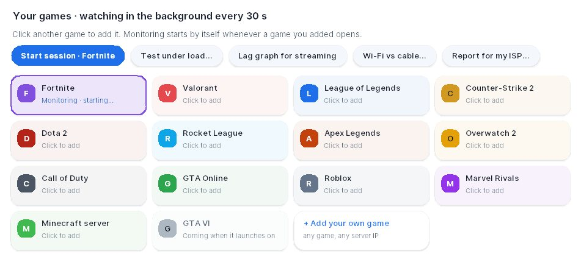

Whose lag is it?
Valorant, Fortnite, League of Legends, Counter-Strike 2, Roblox and more - AdeeboMeter knows their servers. It watches the ones you play on, notices when a game opens, and tells you whether the lag was you, your Wi-Fi, your provider or the game.

Your best server
Each region's ping, jitter and loss, and the one that suits you - measured over a week, evenings included.
Every second while you play
When a game opens, its servers are checked every second, and spikes are kept with whose fault they were.
Match reports
After a session: the spikes, the worst moments and what caused them - in plain words.
Test under load
Does a download in the house wreck your ping? One test shows it.
Report for your ISP
The route to your game's server, hop by hop, and where the loss starts - with every rough minute of the week from your records.
Any game
Add your own game with any server address.
Nothing is sent to game servers until you add a game. Then: pings (or timed connections) to its regions, at the pace you choose in Settings.
Also: AdeeboMeter for streaming · AdeeboMeter for trading · Privacy